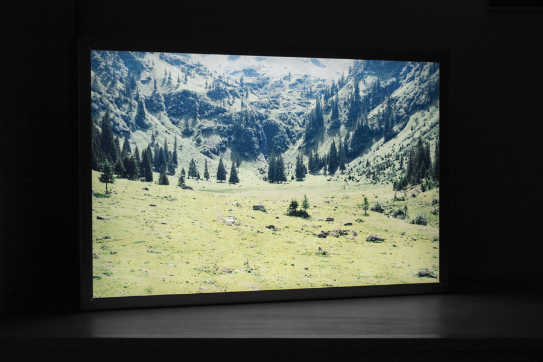
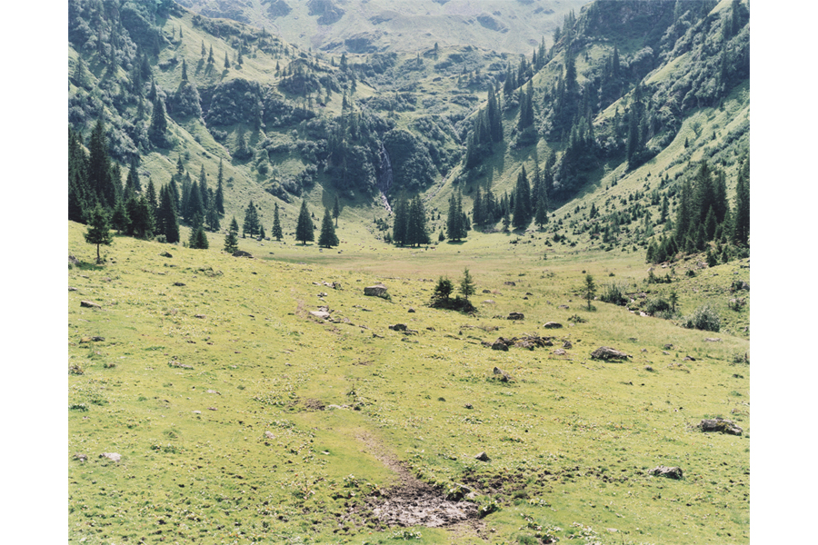

-

-

- 
-

- 
ORTSMARKIERUNG OHNE NAMEN
2 Duratrans-Lightboxes, Edition: 5+2
70cm x 56 cm / 70cm x 46 cm
XX°XX´X.XX X t dir
YY°YY´Y.YY Y t dir
What is it that you see? Is it where I was in the "now of the image", or is it in the very moment in which and where you enter an image?
ABOUT THE PROJECT:
"Ortsmarkierung ohne Namen" (E: untitled placemark) is a work relating to the term of the "lived space". The title itself also includes the variables X and Y representing the coordinate system, aswell as the variable for time t and dir for direction/perspective in search for an horizon. All these variables ultimately get assigned to the location (not where I was when I took the photo) but to where the lightbox is shown or exhibited/ where the spectator is and enters the image (in his/her time and space). If you now for example have both lightboxes in one exhibition - facing each other; or in an entirely different room - the two different frames of ONE original photo (lightboxes) will each have different location marks, different timestamps and perspectives. All of which could - by the irritation of seeing the "same place" twice (two lightboxes) in one room or show - makes the the spectator think: Why?
In last consequence the photo from the installed lightboxes (representing the time when I saw it) generates the entire title and freezes again my personal "lived space". Ortsmarkierung ohne Namen at MdM Möchnsberg, exhbition documentation: "Ortsmarkierung ohne Namen 47°80´0.95-N-W-13°03´836-E-W 14-6-2013--N-17h16"